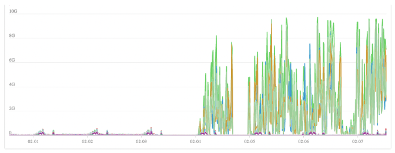
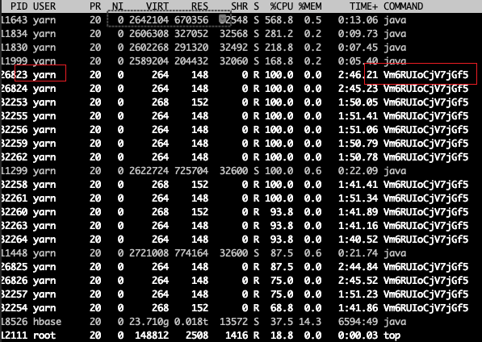
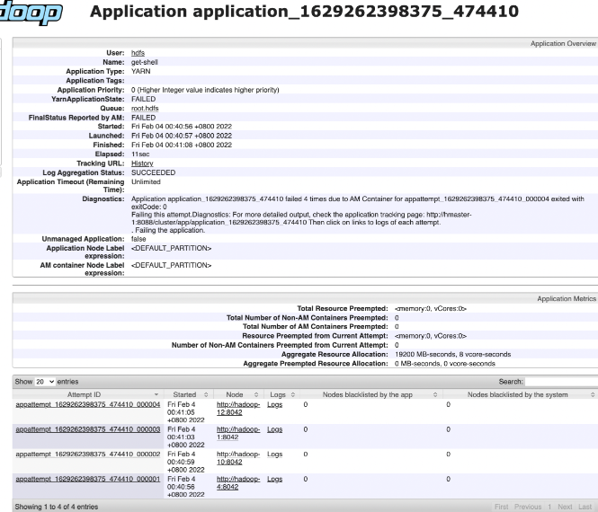

YARN Exploited to Submit get-shell Mining Jobs
background
One day, the cluster network bandwidth became full.

Log in to the node with the problem and find through iftop that there is a large amount of outbound traffic.
hadoop-* => c-73-29-172-82.hsd1.nj.comcast.net 422Mb 433Mb 236Mb
<= 0b 0b 0b
hadoop-* => cpe-75-187-235-200.neo.res.rr.com 358Mb 391Mb 440Mb
At the same time, it was found that there were a large number of abnormal processes on the problem node, and the startup user was YARN.

I found an abnormal application on YARN, named get-shell.

The 8088 port of YARN's ResourceManager can submit a get-shell task to this port. This task will start two processes and then start other processes with the same name. These processes transmit data to the external network.
Cleanup process
ps aux|grep Vm6RUIoCjV7jGf5
Trace the source
After cleaning up the get-shell task, I was not sure whether to submit the get-shell task from the internal network or the external network. I changed the 8088 port to the nginx port, recorded the task submission record, and waited for the next task submission. I found
172.245.81.123 - - [08/Feb/2022:19:08:48 +0800] "POST /ws/v1/cluster/apps/new-application HTTP/1.1" 200 243 "-" "python-requests/2.6.0 CPython/2.7.5 Linux/3.10.0-1160.53.1.el7.x86_64" "-"
The ip is an American IP and comes from the external network. Further investigation revealed that there was a loophole in the security policy. The internal network segment was originally released, but this external network IP happened to be matched, causing malicious users to directly penetrate the YARN of the internal network.
Similar case references:Yarn cluster port 8088 was attacked for mining